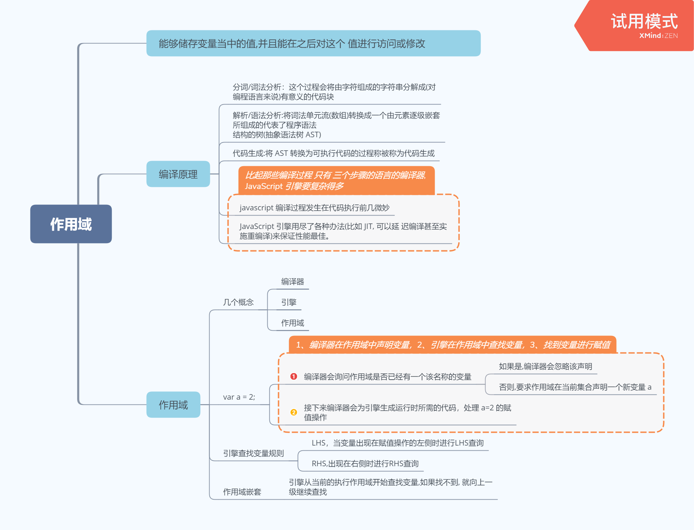
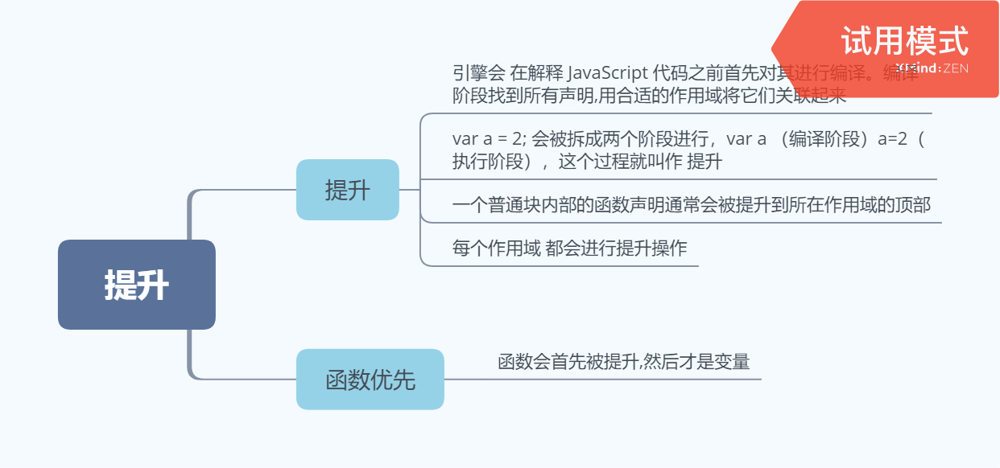
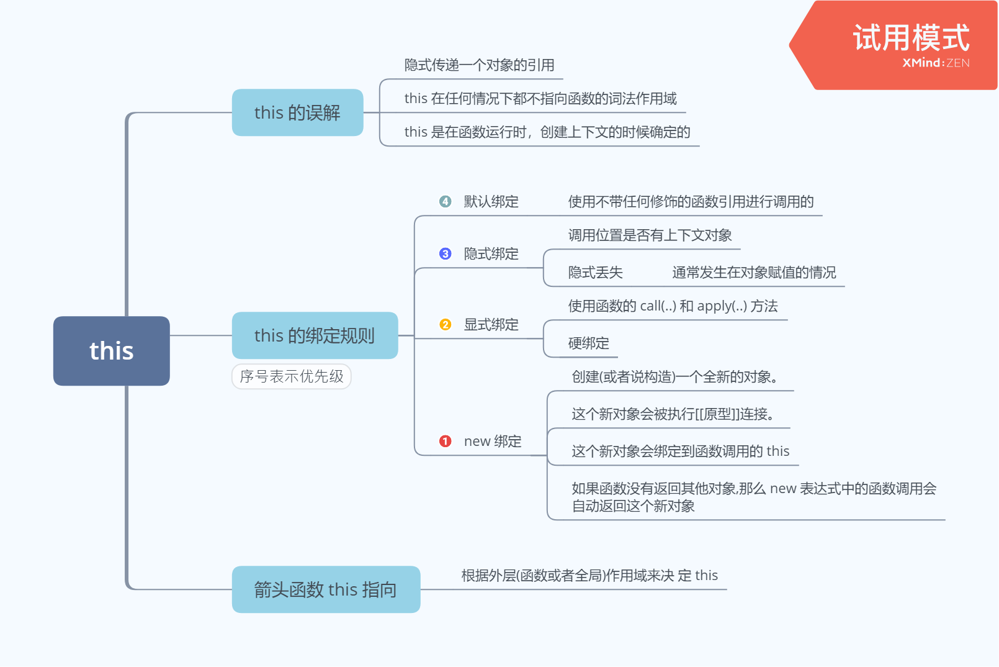
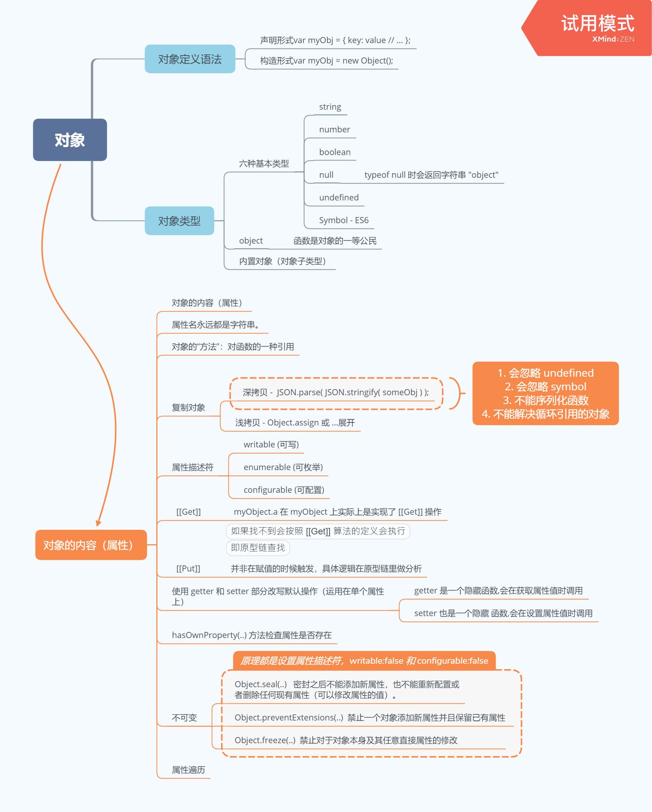
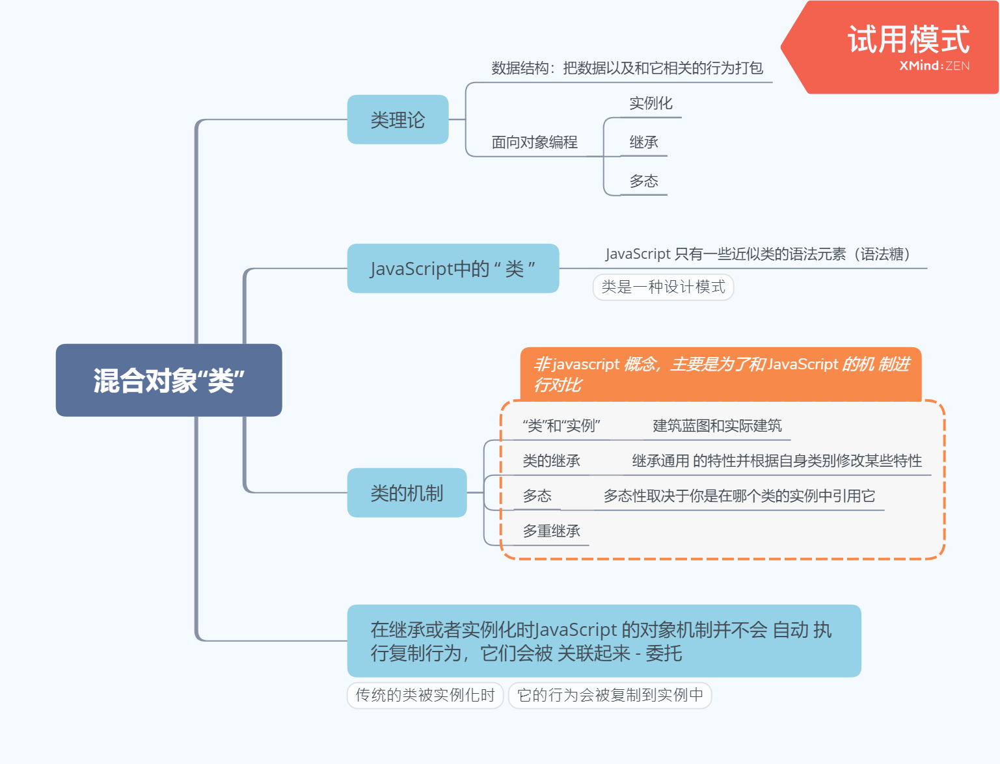
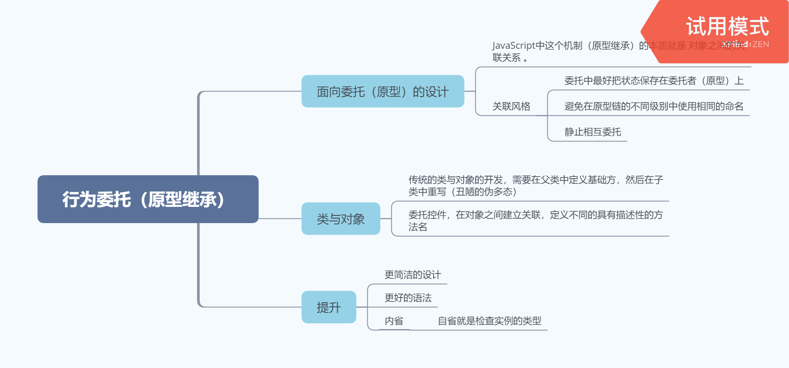

第一部分 作用域和闭包
第一章 - 作用域是什么？
归纳
作用域是一套规则，用于确定在何处以及如何查找变量（标识符）。如果查找的目的是对变量进行赋值，那么就会使用 LHS 查询；如果目的是获取变量的值，就会使用 RHS 查询。赋值操作符会导致 LHS 查询。 ＝ 操作符或调用函数时传入参数的操作都会导致关联作用域的赋值操作。
JavaScript 引擎首先会在代码执行前对其进行编译，在这个过程中，像 var a = 2 这样的声明会被分解成两个独立的步骤：
- 首先， var a 在其作用域中声明新变量。这会在最开始的阶段，也就是代码执行前进行。
- 接下来， a = 2 会查询（LHS 查询）变量 a 并对其进行赋值。
LHS 和 RHS 查询都会在当前执行作用域中开始，如果有需要（也就是说它们没有找到所需的标识符），就会向上级作用域继续查找目标标识符，这样每次上升一级作用域（一层楼），最后抵达全局作用域（顶层），无论找到或没找到都将停止。
不成功的 RHS 引用会导致抛出 ReferenceError 异常。不成功的 LHS 引用会导致自动隐式地创建一个全局变量（非严格模式下），该变量使用 LHS 引用的目标作为标识符，或者抛出 ReferenceError 异常（严格模式下）。
思维导图

第二章 - 词法作用域
归纳
词法作用域意味着作用域是由书写代码时函数声明的位置来决定的。编译的词法分析阶段基本能够知道全部标识符在哪里以及是如何声明的，从而能够预测在执行过程中如何对它们进行查找。
JavaScript 中有两个机制可以“欺骗”词法作用域： eval(..) 和 with 。前者可以对一段包含一个或多个声明的“代码”字符串进行演算，并借此来修改已经存在的词法作用域（在运行时）。后者本质上是通过将一个对象的引用当作作用域来处理，将对象的属性当作作用域中的标识符来处理，从而创建了一个新的词法作用域（同样是在运行时）。
这两个机制的副作用是引擎无法在编译时对作用域查找进行优化，因为引擎只能谨慎地认为这样的优化是无效的。使用这其中任何一个机制都将导致代码运行变慢。不要使用它们。
思维导图

第三章 - 函数作用域和块作用域
归纳
函数是 JavaScript 中最常见的作用域单元。本质上，声明在一个函数内部的变量或函数会在所处的作用域中“隐藏”起来，这是有意为之的良好软件的设计原则。
但函数不是唯一的作用域单元。块作用域指的是变量和函数不仅可以属于所处的作用域，也可以属于某个代码块（通常指 { .. } 内部）。从 ES3 开始， try/catch 结构在 catch 分句中具有块作用域。在 ES6 中引入了 let 关键字（ var 关键字的表亲），用来在任意代码块中声明变量。 if(..) { let a = 2; } 会声明一个劫持了 if 的 { .. } 块的变量，并且将变量添加到这个块中。
有些人认为块作用域不应该完全作为函数作用域的替代方案。两种功能应该同时存在，开发者可以并且也应该根据需要选择使用何种作用域，创造可读、可维护的优良代码。
思维导图

第四章 - 提升
归纳
我们习惯将 var a = 2; 看作一个声明，而实际上 JavaScript 引擎并不这么认为。它将 var a和 a = 2 当作两个单独的声明，第一个是编译阶段的任务，而第二个则是执行阶段的任务。这意味着无论作用域中的声明出现在什么地方，都将在代码本身被执行前首先进行处理。可以将这个过程形象地想象成所有的声明（变量和函数）都会被“移动”到各自作用域的最顶端，这个过程被称为提升。声明本身会被提升，而包括函数表达式的赋值在内的赋值操作并不会提升。
要注意避免重复声明，特别是当普通的 var 声明和函数声明混合在一起的时候，否则会引起很多危险的问题~
思维导图

第五章 - 作用域闭包
归纳
闭包就好像从 JavaScript 中分离出来的一个充满神秘色彩的未开化世界，只有最勇敢的人才能够到达那里。但实际上它只是一个标准，显然就是关于如何在函数作为值按需传递的词法环境中书写代码的。
当函数可以记住并访问所在的词法作用域，即使函数是在当前词法作用域之外执行，这时就产生了闭包。
如果没能认出闭包，也不了解它的工作原理，在使用它的过程中就很容易犯错，比如在循环中。但同时闭包也是一个非常强大的工具，可以用多种形式来实现模块等模式。
模块有两个主要特征：（1）为创建内部作用域而调用了一个包装函数；（2）包装函数的返回值必须至少包括一个对内部函数的引用，这样就会创建涵盖整个包装函数内部作用域的闭包。
思维导图

反思认知
- 函数提升优先于变量提升，函数提升会把整个函数挪到作用域顶部，变量提升只会把声明挪到作用域顶部
- var 存在提升，我们能在声明之前使用。let、const 因为暂时性死区的原因，不能在声明前使用
- var 在全局作用域下声明变量会导致变量挂载在 window 上，其他两者不会
let 和 const 作用基本一致，但是后者声明的变量不能再次赋值
模块化能解决命名冲突, 提供复用性, 提高代码可维护性。在早期，使用立即执行函数实现模块化是常见的手段，通过函数作用域解决了命名冲突、污染全局作用域的问题。
1 | (function(globalVariable){ |
知识拓展: ES Module 是原生实现的模块化方案，与 CommonJS 有以下几个区别
2
3
4
- CommonJS 是同步导入，因为用于服务端，文件都在本地，同步导入即使卡住主线程影响也不大。而后者是异步导入，因为用于浏览器，需要下载文件，如果也采用同步导入会对渲染有很大影响
- CommonJS 在导出时都是值拷贝，就算导出的值变了，导入的值也不会改变，所以如果想更新值，必须重新导入一次。但是 ES Module 采用实时绑定的方式，导入导出的值都指向同一个内存地址，所以导入值会跟随导出值变化
- ES Module 会编译成 require/exports 来执行的
- 闭包的定义其实很简单：函数 A 内部有一个函数 B，函数 B 可以访问到函数 A 中的变量，那么函数 B 就是闭包。(函数是在当前词法作用域之外执行)
1 | // 在 JS 中，闭包存在的意义就是让我们可以间接访问函数内部的变量。 |
知识拓展: 柯里化，柯里化通常也称部分求值，其含义是给函数分步传递参数，每次传递参数后,部分应用参数，并返回一个更具体的函数接受剩下的参数，中间可嵌套多层这样的接受部分参数函数，逐步缩小函数的适用范围，逐步求解,直至返回最后结果。
第二部分 this和对象原型
第一 & 二章 - 关于 this与全面解析
归纳
对于那些没有投入时间学习 this 机制的 JavaScript 开发者来说， this 的绑定一直是一件非常令人困惑的事。 this 是非常重要的，但是猜测、尝试并出错和盲目地从 Stack Overflow上复制和粘贴答案并不能让你真正理解 this 的机制。
学习 this 的第一步是明白 this 既不指向函数自身也不指向函数的词法作用域，你也许被这样的解释误导过，但其实它们都是错误的。this 实际上是在函数被调用时发生的绑定，它指向什么完全取决于函数在哪里被调用。
如果要判断一个运行中函数的 this 绑定，就需要找到这个函数的直接调用位置。找到之后就可以顺序应用下面这四条规则来判断 this 的绑定对象。
- 由 new 调用？绑定到新创建的对象。
- 由 call 或者 apply （或者 bind ）调用？绑定到指定的对象。
- 由上下文对象调用？绑定到那个上下文对象。
- 默认：在
严格模式下绑定到 undefined，否则绑定到全局对象。
一定要注意，有些调用可能在无意中使用默认绑定规则。如果想“更安全”地忽略 this 绑定，你可以使用一个 DMZ 对象，比如 ø = Object.create(null) ，以保护全局对象。
ES6 中的箭头函数并不会使用四条标准的绑定规则，而是根据当前的词法作用域来决定
this ，具体来说，箭头函数会继承外层函数调用的 this 绑定（无论 this 绑定到什么）。这其实和 ES6 之前代码中的 self = this 机制一样。
思维导图

第三章 - 对象
归纳
JavaScript 中的对象有字面形式（比如 var a = { .. } ）和构造形式（比如 var a = newArray(..) ）。字面形式更常用，不过有时候构造形式可以提供更多选项。
许多人都以为“JavaScript 中万物都是对象”，这是错误的。对象是 6 个（或者是 7 个，取决于你的观点）基础类型之一。对象有包括 function 在内的子类型，不同子类型具有不同的行为，比如内部标签 [object Array] 表示这是对象的子类型数组。
对象就是键 / 值对的集合。可以通过 .propName 或者 [“propName”] 语法来获取属性值。访问属性时，引擎实际上会调用内部的默认 [[Get]] 操作（在设置属性值时是 [[Put]] ），[[Get]] 操作会检查对象本身是否包含这个属性，如果没找到的话还会查找 [[Prototype]]链（参见第 5 章）。
属性的特性可以通过属性描述符来控制，比如 writable 和 configurable 。此外，可以使用Object.preventExtensions(..) 、 Object.seal(..) 和 Object.freeze(..) 来设置对象（及其属性）的不可变性级别。
属性不一定包含值——它们可能是具备 getter/setter 的“访问描述符”。此外，属性可以是可枚举或者不可枚举的，这决定了它们是否会出现在 for..in 循环中。
你可以使用 ES6 的 for..of 语法来遍历数据结构（数组、对象，等等）中的值， for..of会寻找内置或者自定义的 @@iterator 对象并调用它的 next() 方法来遍历数据值。
思维导图

第四章 - 混合对象“类”
归纳
类是一种设计模式。许多语言提供了对于面向类软件设计的原生语法。JavaScript 也有类似的语法，但是和其他语言中的类完全不同。
传统的类被实例化时，它的行为会被复制到实例中。类被继承时，行为也会被复制到子类中。
多态（在继承链的不同层次名称相同但是功能不同的函数）看起来似乎是从子类引用父
类，但是本质上引用的其实是复制的结果。
JavaScript 并不会（像类那样）自动创建对象的副本。混入模式（无论显式还是隐式）可以用来模拟类的复制行为，但是通常会产生丑陋并且脆弱的语法，比如显式伪多态（ OtherObj.methodName.call(this, …) ），这会让代码更加难懂并且难以维护。
思维导图

第五章 - 原型
归纳
如果要访问对象中并不存在的一个属性， [[Get]] 操作就会查找对象内部[[Prototype]] 关联的对象。这个关联关系实际上定义了一条“原型链”（有点像嵌套的作用域链），在查找属性时会对它进行遍历。
所有普通对象都有内置的 Object.prototype ，指向原型链的顶端（比如说全局作用域），如果在原型链中找不到指定的属性就会停止。 toString() 、 valueOf() 和其他一些通用的功能都存在于 Object.prototype 对象上，因此语言中所有的对象都可以使用它们。
关联两个对象最常用的方法是使用 new 关键词进行函数调用，在调用的 4 个步骤中会创建一个关联其他对象的新对象。
使用 new 调用函数时会把新对象的 .prototype 属性关联到“其他对象”。带 new 的函数调用通常被称为“构造函数调用”，尽管它们实际上和传统面向类语言中的类构造函数不一样。
虽然这些 JavaScript 机制和传统面向类语言中的“类初始化”和“类继承”很相似，但是 JavaScript 中的机制有一个核心区别，那就是不会进行复制，对象之间是通过内部的[[Prototype]] 链关联的。
出于各种原因，以“继承”结尾的术语（包括“原型继承”）和其他面向对象的术语都无
法帮助你理解 JavaScript 的真实机制（不仅仅是限制我们的思维模式）。
相比之下，“委托”是一个更合适的术语，因为对象之间的关系不是复制而是委托。
思维导图

第六章 - 行为委托
属性不一定包含值——它们可能是具备 getter/setter 的“访问描述符”。此外，属性可以是可枚举或者不可枚举的，这决定了它们是否会出现在 for..in 循环中。
你可以使用 ES6 的 for..of 语法来遍历数据结构（数组、对象，等等）中的值， for..of会寻找内置或者自定义的 @@iterator 对象并调用它的 next() 方法来遍历数据值。
归纳
在软件架构中你可以选择是否使用类和继承设计模式。大多数开发者理所当然地认为类是唯一（合适）的代码组织方式，但是本章中我们看到了另一种更少见但是更强大的设计模式：行为委托。
行为委托认为对象之间是兄弟关系，互相委托，而不是父类和子类的关系。JavaScript 的[[Prototype]] 机制本质上就是行为委托机制。也就是说，我们可以选择在 JavaScript 中努力实现类机制，也可以拥抱更自然的 [[Prototype]] 委托机制。
当你只用对象来设计代码时，不仅可以让语法更加简洁，而且可以让代码结构更加清晰。
对象关联（对象之前互相关联）是一种编码风格，它倡导的是直接创建和关联对象，不把它们抽象成类。对象关联可以用基于 [[Prototype]] 的行为委托非常自然地实现。
思维导图

反思认知
this:
- 对于直接调用 foo 来说，不管 foo 函数被放在了什么地方，this 一定是 window
- 对于 obj.foo() 来说，我们只需要记住，谁调用了函数，谁就是 this，所以在这个场景下 foo 函数中的 this 就是 obj 对象
- 对于 new 的方式来说，this 被永远绑定在了 c 上面，不会被任何方式改变 this
- 箭头函数中的 this 只取决包裹箭头函数的第一个普通函数的 this

原始类型存储值，对象类型存储地址（指针）。
原始类型存储的都是值，是没有函数可以调用的，比如 undefined.toString()
- 此时你肯定会有疑问，这不对呀，明明 ‘1’.toString() 是可以使用的。其实在这种情况下，’1’ 已经不是原始类型了，而是被强制转换成了 String 类型也就是对象类型，所以可以调用 toString 函数。
- 在 JS 中，存在着 6 种原始值，分别是：
- boolean
- null
对于 null 来说，很多人会认为他是个对象类型，其实这是错误的。虽然 typeof null 会输出 object，但是这只是 JS 存在的一个悠久 Bug。在 JS 的最初版本中使用的是 32 位系统，为了性能考虑使用低位存储变量的类型信息，000 开头代表是对象，然而 null 表示为全零，所以将它错误的判断为 object 。虽然现在的内部类型判断代码已经改变了，但是对于这个 Bug 却是一直流传下来。
- undefined
- number
JS 的 number 类型是浮点类型的，在使用中会遇到某些 Bug，比如 0.1 + 0.2 !== 0.3
- string
- symbol
- 浅拷贝: 通过 Object.assign(只会拷贝所有的属性值到新的对象中，如果属性值是对象的话，拷贝的是地址)或展开运算符
...
1 | // Object.assign |
- 深拷贝:
JSON.parse(JSON.stringify(object))
1 | let a = { |
- 会忽略 undefined
- 会忽略 symbol
- 不能序列化函数
- 不能解决循环引用的对象
1 | let a = { |
- 不变性设置: Object.preventExtensions(..) 、Object.seal(..) 和 Object.freeze(..)
1 | Object.preventExtensions(..) // 禁止增加并保留当前属性 |
- 原型
1 | obj.__proto__ === Fun.prototype |
- Object 是所有对象的爸爸，所有对象都可以通过 proto 找到它
- Function 是所有函数的爸爸，所有函数都可以通过 proto 找到它(bind除外)
- 函数的 prototype 是一个对象
- 对象的 proto 属性指向原型， proto 将对象和原型连接起来组成了原型链
1 | // 原型继承 |